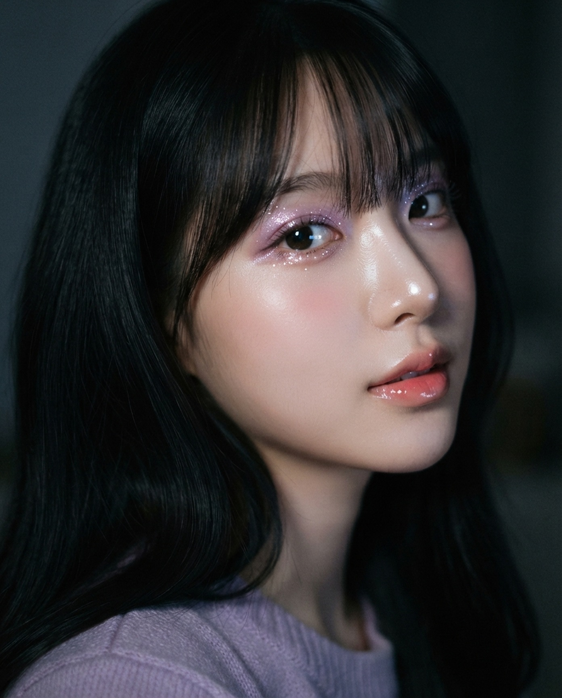

올가을 퍼플 코어, 내 톤에 맞는 보라를
고르는 법을 정리해 왔어요.
채원은 라일락을 눈두덩과 눈 밑에 얇게 펴고 화이트 펄을 얹었어요. 라인은 최소한으로.
비토리아 세레티는 진한 보라를 아이홀에 넓게, 대신 치크·립은 누드톤으로 눌렀어요.
예지는 치크 위에 퍼플 하이라이터를 살짝. 가장 쉽게 시작하는 방법이에요.
평소 쓰던 브라운 섀도를 먼저 깔고, 보라는 눈 앞쪽이나 중앙에만 얇게.
실버 대신 골드·샴페인 펄을 올리면 보라가 피부에 훨씬 자연스럽게 붙어요.
보라가 주인공인 날엔 치크와 립을 누드톤으로. 전체 균형이 맞아요.
끝까지 읽어줘서 고마워요. 오늘 레터를 한 장으로 정리했어요.
보라가 처음이라면 눈 앞머리나 눈 밑에만 살짝 올려 보세요. 하이라이터처럼 쓰면 부담이 확 줄어요.
저장해두고 쇼핑할 때 꺼내보세요